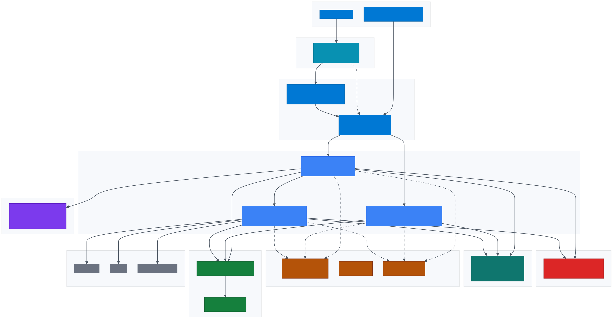
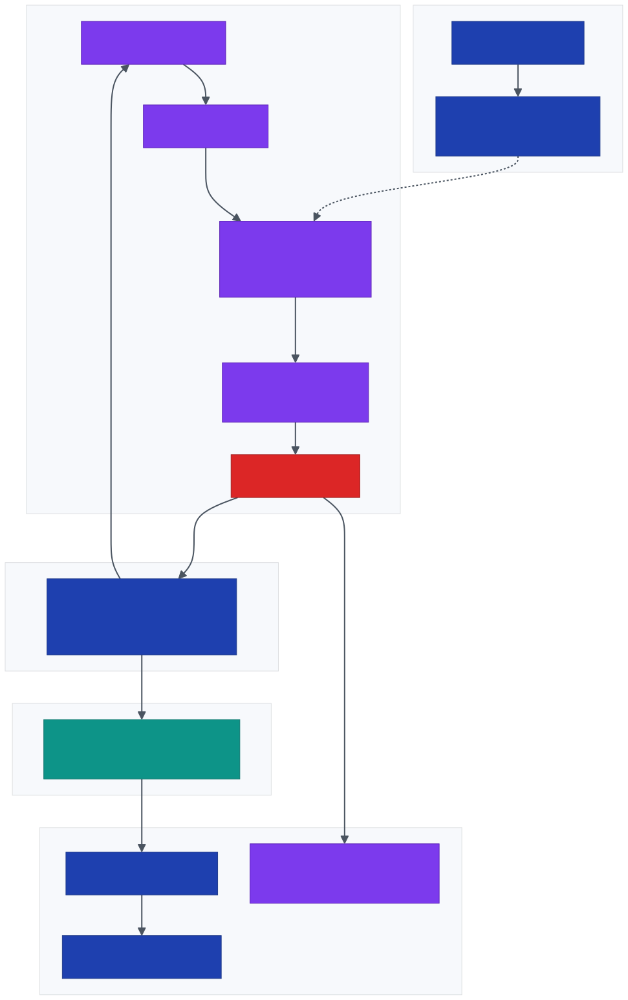
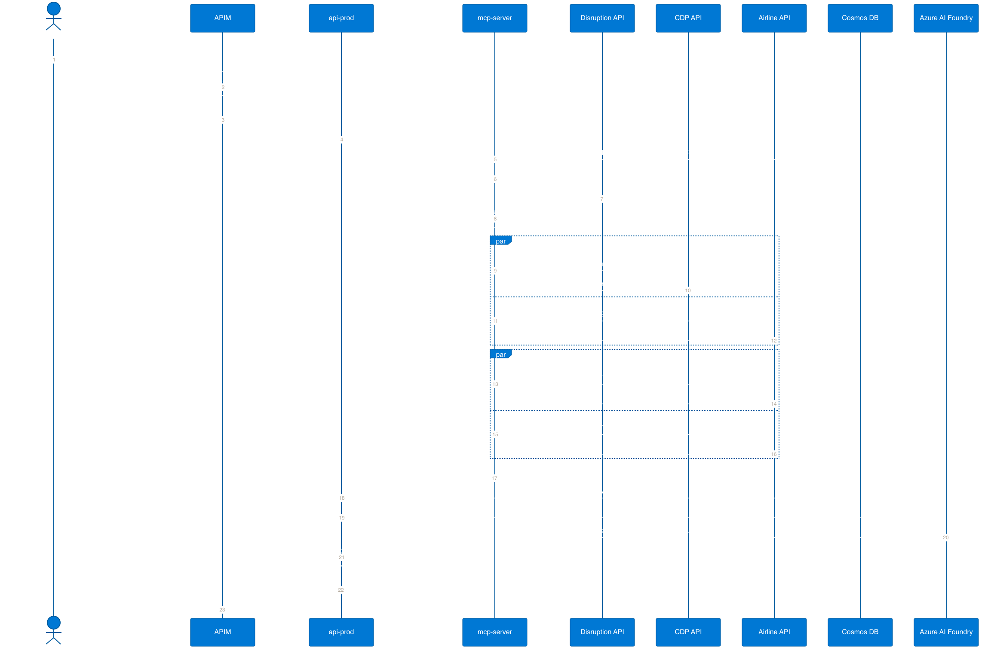
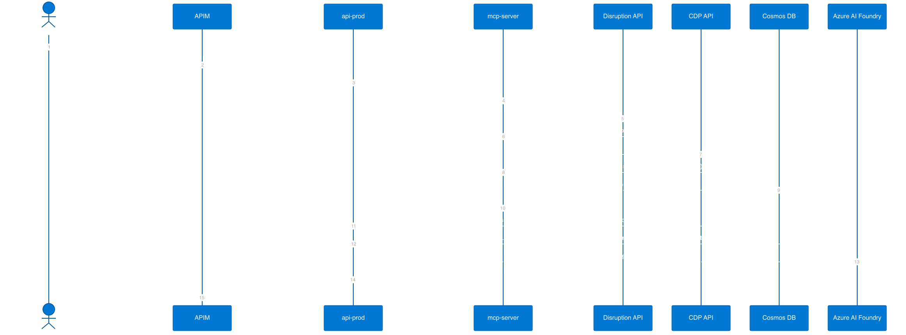
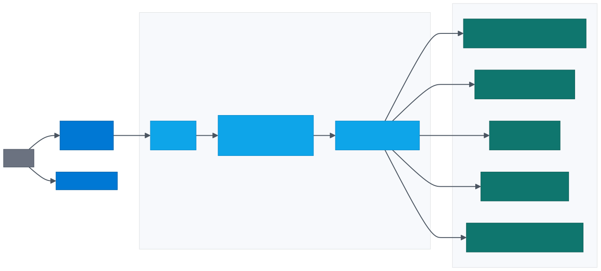
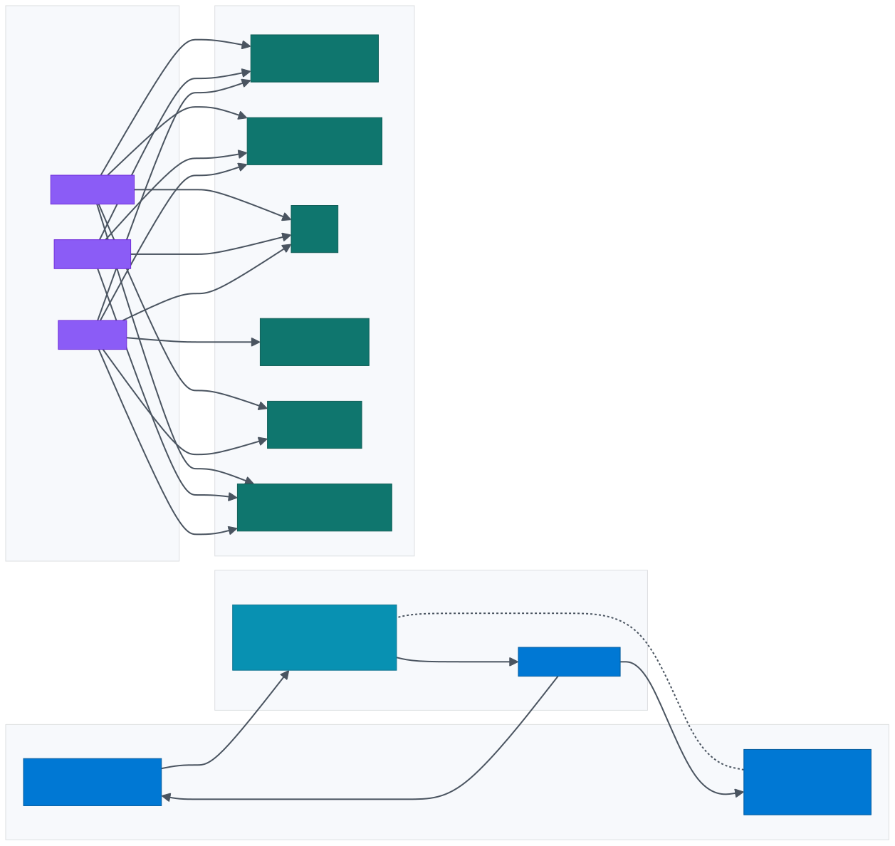
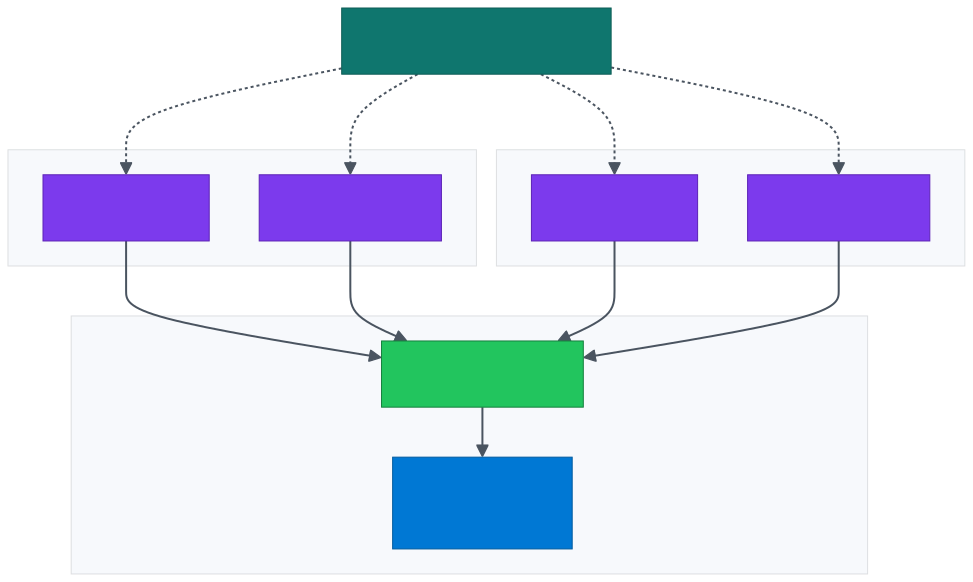
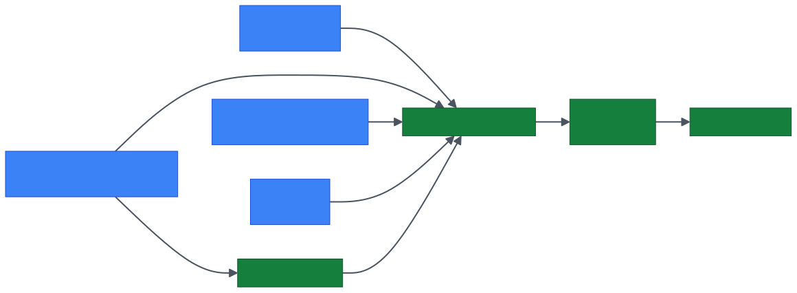

1.Executive Summary
1.1 What is prodDisruption
prodDisruption is a multi-tenant, AI-driven SaaS platform that automates how an airline handles passenger experience the moment a flight is cancelled or delayed. It sits in front of the airline's existing CRM, Customer Data Platform (CDP) and flight inventory systems, and turns every disruption event into one of two outcomes:
- Recovery — when a flight is cancelled, an Azure AI Foundry agent selects the best alternate flight and the best available seat for that passenger, in under 30 seconds, using rules derived from the passenger's CDP persona (Student, Doctor, Defence, High Spender, General).
- Messaging — when a flight is delayed, an Azure AI Foundry agent selects the right message group and produces three personalised, channel-aware notifications (SMS, WhatsApp, Email) from the airline's approved template set, again driven by the passenger's persona.
1.2 Why this is needed
Flight disruptions are one of the largest unmanaged cost and CX problems in commercial aviation:
- Globally, irregular operations (IROPS) cost the aviation industry an estimated USD 30+ billion every year in operational recovery, compensation and lost loyalty (industry estimates).
- A single cancellation on a narrow-body aircraft produces roughly 180 individual rebooking conversations that today queue on contact-centre agents, with handle times in tens of minutes per passenger.
- Generic disruption SMS treats every passenger identically — a Defence traveller, a Doctor, a Student and a top-tier loyalist all receive the same template. Personalisation at scale is operationally impossible by hand.
- Airlines competing on customer experience need to scale empathy: every disrupted passenger needs an immediate, individually-relevant response — not a position in a phone queue.
1.3 Business outcomes
1.4 How the platform works
Each disruption request follows the same four-step flow: (1) the platform ingests the disruption event from the airline's operational systems, (2) resolves the passenger's persona via the airline's CDP, (3) invokes the tenant-scoped Azure AI Foundry agent for either Recovery or Messaging, and (4) returns a deterministic, structured JSON response that the airline's downstream channels (web, mobile, contact centre, OTAs) consume directly.
1.5 Engineering posture
The platform is deployed entirely on managed Microsoft Azure services: three Azure Container Apps (api-prod, api-admin, mcp-server) behind Azure API Management, with an Azure Static Web Apps front-end for tenant administration. Azure Cache for Redis provides idempotency and hot-path caching; Azure Cosmos DB for MongoDB stores tenant configuration, AI agent registry, prompts and templates; Azure Key Vault holds all secrets with Managed Identity end-to-end; Microsoft Entra ID issues identities for admins and inter-tenant federation. Tenant configuration and the AI agent registry are hot-swappable — agent IDs, prompts and templates change at runtime without an application restart.
tenant_id at every layer2.Business Context
| Stakeholder | Outcome |
|---|---|
| Airline passengers | Sub-minute personalised recovery (alternate flight + seat) or proactive delay notifications |
| Airline operations | Automation of disruption recovery; reduction in contact-centre load |
| Airline marketing / CRM | Persona-aware messaging across Student, Doctor, Defence, High Spender, General segments |
| Airline IT | Drop-in SaaS — no on-premise AI infrastructure; standards-based REST API |
| AIONOS | Multi-tenant SaaS economics on Azure with per-tenant isolation and metering |
Supported disruption flows
- Recovery flow —
event_type = flight_cancelled. AI selects the best alternate flight + best seat based on CDP-derived priority rules. - Messaging flow —
event_type = flight_delayed. AI selects the best message group and personalises SMS / WhatsApp / Email content.
3.Logical Architecture
The platform is composed of three Azure Container Apps fronted by Azure API Management. The Admin Panel is delivered as a Static Web App. All data and identity services are accessed over private endpoints from inside the Container Apps VNET.

4.Component Responsibilities
| Component | Azure Service | Responsibility | Ingress |
|---|---|---|---|
| Admin SPA | Azure Static Web Apps | Airline admin UI for tenant config, agent registry, prompt and template management | Public (HTTPS, custom domain) |
| APIM | API Management Standard v2 | Single ingress, JWT auth, tenant context injection (X-Tenant-Id), rate limiting, subscription keys, schema validation, request logging |
Public (HTTPS) |
api-prod | Azure Container Apps | Public REST API. Receives disruption requests, orchestrates the MCP call, executes the Azure AI Foundry agent and returns the structured response | External — via APIM only |
api-admin | Azure Container Apps | Backend for the Admin SPA. CRUD on tenants, agents, prompts, templates. Writes audit logs to Cosmos DB | External — via APIM only |
mcp-server | Azure Container Apps | Data orchestration plane. Parallel async fan-out to Disruption API, CDP API and Airline API. Resolves tenant base URLs from Cosmos DB | Internal — VNET only |
| AI Foundry | Azure AI Foundry (GPT-4.1) | Hosts the Recovery Agent and Messaging Agent. Per-tenant agent IDs resolved at runtime from Cosmos DB | Managed Identity authenticated |
| Redis Cache | Azure Cache for Redis | Hot-path caching: idempotency keys (de-dup repeated PNR requests), response cache for completed jobs, seat-map cache (30 min TTL), tenant-config and agent-config short-TTL cache, rate-limit counters | Private endpoint (Premium tier) / firewall + MI auth (Standard tier) |
| Cosmos DB | Cosmos DB for MongoDB | System of record for tenant config, agents, prompts, templates, settings, audit logs | Private endpoint |
| Entra ID | Microsoft Entra ID (P1) | Identity provider for airline admin users (SSO into the Admin SPA), JWT issuer for APIM validation, federation point for airline IdPs (B2B), service principals for CI/CD | Public OIDC / OAuth2 endpoints |
| Key Vault | Azure Key Vault | Centralised secret store. All Container Apps read via Key Vault references — no plaintext secrets in app config | Private endpoint |
| ACR | Azure Container Registry (Premium) | Signed, scanned container images for all three apps. Image pull via Managed Identity | Private endpoint |
| Application Insights / LAW | Azure Monitor | Distributed tracing, custom metrics, log aggregation, alerting | n/a |
5.Runtime Flows
5.1 End-to-End Operational Flow — how an airline uses prodDisruption
The diagram below shows the full lifecycle of a single disruption — from detection in the airline's Operations Control Centre (OCC) through to passenger delivery and outcome capture in the airline's PSS / CRM. prodDisruption sits between the airline's operational data systems (disruption feed, CDP, flight inventory) and the airline's passenger channels (web, mobile, contact centre, OTA, push gateway). The platform produces decisions; the airline's existing systems remain the system of record for rebooking, notification dispatch and loyalty capture.

5.2 Data inputs and outputs per request
Each disruption request consumes a small, strictly-defined input set and produces a strictly-shaped JSON output. The platform itself is stateless on the request path — no passenger PII is persisted; only decision metadata (no personal data) is written to the audit log.
| Direction | Field / payload | Source | Purpose |
|---|---|---|---|
| Inbound — request | pnr | Calling channel (Web / Mobile / IVR / OTA) | Lookup key for disruption event & CDP profile |
last_name | Calling channel | Identity verification against the PNR | |
tenant_id | APIM (extracted from JWT claim) | Routes to correct airline tenant config + agent | |
| Pulled — airline operational data | Disruption event | Airline Disruption API | Event type · segKey · delay / cancel context |
| CDP profile | Airline CDP | Persona signals — Student · Doctor · Defence · High Spender · General | |
| Flight options + seat maps | Airline Flight Inventory API | Available alternates + assignable seats (recovery flow only) | |
| Pulled — platform config | Active agent ID + admin prompts | Cosmos DB agents + prompts (per tenant + flow) | Hot-swappable AI configuration |
| Message templates | Cosmos DB templates | Approved base content for messaging flow | |
| Outbound — recovery flow | selected_flight + flight_reasoning | Azure AI Foundry — Recovery Agent | Flight number · time · class · segKey · why this flight |
selected_seat + seat_reasoning | Azure AI Foundry — Recovery Agent | Seat number · travel class · seat type · why this seat | |
| Outbound — messaging flow | selected_group_id + reason | Azure AI Foundry — Messaging Agent | Persona-matched template group identifier |
messages[SMS, WhatsApp, Email] | Azure AI Foundry — Messaging Agent | Personalised, channel-aware copy ready for dispatch | |
| Side-effect | Audit log entry | Platform → Cosmos DB audit_logs | {tenant_id, pnr_hash, decision, agent_id, tokens_in/out, latency_ms, ts} — no PII |
5.3 Decision contract — who owns what
prodDisruption is a decision service, not an execution service. It returns a JSON decision; existing airline systems remain responsible for the rebooking transaction, notification dispatch and loyalty capture. This separation keeps the integration non-disruptive to the airline's PSS and audit posture.
| Step | Owner | System of record |
|---|---|---|
| Disruption detection | Airline OCC / NOC | Airline FOS / OCC tooling |
| Disruption event publishing | Airline IT | Airline Disruption API |
| Passenger persona | Airline marketing / data | Airline CDP |
| Flight options + seat maps | Airline IT | GDS / NDC / Airline inventory |
| Decision generation (AI) | prodDisruption | Azure AI Foundry agents |
| Delivery to passenger | Airline channel | Channel-owned (web / mobile / SMS gateway / agent app) |
| Rebooking commit | Airline reservations | Airline PSS (Amadeus / Sabre / Navitaire) |
| Loyalty & NPS capture | Airline CRM | Airline loyalty platform |
| Decision audit trail | prodDisruption | Cosmos DB audit_logs |
5.4 Recovery flow — technical sequence (cancelled flight)

5.5 Messaging flow — technical sequence (delayed flight)

6.Azure Service Inventory
| Service | SKU / Tier | Rationale |
|---|---|---|
| Azure API Management | Standard v2 (Stv2) | Production multi-tenant ingress, VNET integration, subscription keys, JWT validation |
| Azure Container Apps | Dedicated workload profile (D4) | Per-app autoscaling, VNET integration, predictable cost |
| Azure Static Web Apps | Standard | Custom domain, SSO with Entra ID, staging environments |
| Azure Cosmos DB for MongoDB | RU autoscale (1K–10K) | Predictable cost or true elastic; session consistency; per-tenant partition key |
| Azure Cache for Redis | Standard C1 (1 GB) — Premium P1 recommended | Idempotency, response cache, seat-map cache; Premium adds private endpoint and VNET injection |
| Azure AI Foundry | Standard project — model: GPT-4.1 | Hosts persistent assistants (Recovery + Messaging); per-tenant agent IDs |
| Microsoft Entra ID | Premium P1 | Admin SSO, JWT issuance for APIM, federation to airline IdPs, conditional access |
| Azure Key Vault | Standard | Secrets store; HSM tier upgrade available on enterprise contracts |
| Azure Container Registry | Premium | Geo-replication, content trust, private endpoint, Defender scanning |
| Application Insights | Workspace-based | Distributed tracing, custom metrics, KQL across all apps |
| Log Analytics Workspace | Pay-as-you-go | Central log sink + diagnostic settings for every resource |
| Microsoft Defender for Cloud | Defender for Containers, Key Vault, Cosmos DB | Posture management + runtime threat detection |
| Azure DDoS Protection | Network Protection (Standard) | Applied at the APIM public IP |
7.Network Architecture

- APIM deployed in external mode in
subnet-apim; egress permitted only tosubnet-aca. - Container Apps Environment is VNET-integrated.
mcp-serveruses internal-only ingress and is not addressable from the internet. - All PaaS data services (Cosmos DB, Key Vault, ACR) are reached over Private Endpoints. Public network access is disabled on every account.
- Egress to tenant external APIs is routed through the Container Apps NAT — a fixed outbound public IP registered with each airline tenant for IP allow-listing.
- NSGs on each subnet enforce least-privilege L4 rules: APIM → ACA on 443 only; ACA → private endpoints on 443 (KV, ACR, AI Foundry), 10250 / 27017 (Cosmos), 6380 (Redis TLS).
8.Identity & Access
8.1 Identity providers and trust flow
Microsoft Entra ID is the identity authority for the platform. Two distinct identity flows are in use: human identities for airline admin users into the Admin Panel, and workload identities (system-assigned Managed Identity) for service-to-service authentication.

8.2 Zero-trust controls
| Principle | Implementation |
|---|---|
| No secrets in code or env | Every secret is a Key Vault reference (secretref: in Container Apps). Rotated via Key Vault rotation policies. |
| Managed Identity everywhere | All inter-service calls authenticate via system-assigned MI. No SAS tokens, no connection strings. |
| RBAC, least privilege | Each MI holds the minimum role required — e.g. mcp-server is Cosmos Data Reader, not Contributor. |
| Human identity | Microsoft Entra ID (P1) — Conditional Access policies enforce MFA; airline tenants may federate their own IdP via B2B collaboration. |
| JWT at the edge | APIM validate-jwt policy verifies tokens against the Entra ID JWKS endpoint. Tenant claim drives X-Tenant-Id header injection. |
| Admin Panel SSO | Static Web Apps redirects unauthenticated users to Entra ID; admin roles enforced in SWA route config and in the api-admin backend. |
| Audit logging | Every admin write creates an audit log entry in Cosmos DB. Diagnostic settings on Key Vault and Cosmos DB stream to Log Analytics. |
9.Data Architecture
9.1 Cosmos DB collections (database flight_operations)
| Collection | Purpose | Partition key | Indexed fields |
|---|---|---|---|
tenants | Per-tenant base URLs and metadata | tenant_id | tenant_id, is_active |
agents | AI Foundry agent IDs per tenant per flow | tenant_id | tenant_id, flow, is_active |
prompts | System/user prompt overrides per tenant per flow | tenant_id | tenant_id, flow, is_active |
templates | Message templates (delay flow) | tenant_id | tenant_id, is_active |
settings | Generic runtime settings | tenant_id | tenant_id |
audit_logs | Admin write audit trail | tenant_id | tenant_id, timestamp |
9.2 Data classification & residency
| Class | Examples | Residency | Retention |
|---|---|---|---|
| Tenant configuration | Base URLs, agent IDs, prompts, templates | Primary Azure region (tenant-selected) | Lifetime of tenant |
| PII (transient) | PNR, last name, contact (request body only) | In-memory only, never persisted | None |
| Audit logs | Admin actions | Same region as tenant | 365 days (configurable) |
| Telemetry | Request traces, AI token counts | Same region as tenant | 30 days hot / 90 days archive |
Key guarantee: the platform does not persist passenger PII. All PII flows through mcp-server in memory and is discarded after the response is returned.
9.3 Consistency & backup
- Consistency: Session consistency (per-tenant partition reads are read-your-writes).
- Backup: Continuous backup with 30-day point-in-time restore.
- Geo-replication: Available via secondary read region with auto-failover.
9.4 Redis cache key schema
Azure Cache for Redis sits on the hot path and is keyed strictly by tenant_id to enforce isolation. Keys, TTLs and use-cases:
| Key pattern | TTL | Purpose |
|---|---|---|
idem:{tenant_id}:{pnr} | 300 s | Idempotency — duplicate PNR requests within the window return the cached result instead of re-running the AI agent |
result:{tenant_id}:{request_hash} | 3600 s | Response cache for completed disruption decisions |
seatmap:{tenant_id}:{segKey} | 1800 s | Parsed seat map cache — avoids re-fetching the airline seat-map API for the same flight segment |
agent_cfg:{tenant_id} | 60 s | Resolved agent IDs + active prompts from Cosmos — short-TTL to allow admin hot-swap to propagate quickly |
tenant_cfg:{tenant_id} | 300 s | Tenant base URLs for external APIs — reduces Cosmos reads on the hot path |
rl:{tenant_id}:{window} | 60 s sliding | Rate-limit counter — used by APIM and as a defensive secondary check in api-prod |
Tier note: Standard C1 satisfies the cache workload at current volumes. Upgrading to Premium P1 enables private endpoint support, VNET injection and zone redundancy — recommended once contractual zero-trust requirements are signed with the first enterprise tenant.
10.AI Architecture

| Property | Value |
|---|---|
| SDK | azure-ai-projects + azure-ai-agents |
| Authentication | DefaultAzureCredential — Managed Identity in production |
| Temperature / top_p | 0.1 / 0.1 (near-deterministic) |
| Thread lifecycle | Created per request, never reused |
| Timeout | 120 second polling window |
| Output parsing | safe_json_from_agent() strips markdown fences and validates JSON |
| Hot-swap | Activating a new agent ID in Cosmos DB applies on the next request — no app restart |
| Prompt layering | Base prompt → admin system prompt prepended → admin user prompt appended |
11.Multi-Tenancy Model
| Layer | Isolation mechanism | Shared infrastructure? |
|---|---|---|
| APIM | JWT tenant_id claim → X-Tenant-Id header injection; per-tenant rate limit and quota | Shared gateway |
| Container Apps | Tenant context flows in headers; no in-memory tenant state | Shared compute |
| MCP server | tenant_id resolves every external API base URL | Shared compute |
| Cosmos DB | Partition key = tenant_id on every collection | Shared account, isolated partitions |
| Key Vault | Per-tenant secret naming: tenants/{tenant_id}/{secret} | Shared vault |
| AI Foundry | Distinct agent_id per tenant per flow; thread isolation enforced by SDK | Shared project, isolated agents |
| External APIs | Per-tenant base URLs from tenants collection | Fully isolated per airline |
Tenant onboarding workflow
12.Observability

Custom telemetry
| Metric | Dimensions | Purpose |
|---|---|---|
disruption_request_latency_ms | tenant_id, flow, outcome | SLO tracking |
ai_agent_run_latency_ms | tenant_id, flow, agent_id | AI performance |
ai_tokens_consumed | tenant_id, flow, direction | Cost attribution |
mcp_external_api_latency_ms | tenant_id, api_name | Airline-side performance |
disruption_request_total | tenant_id, flow, status | Throughput & error rate |
Production alert set
| Severity | Condition | Action |
|---|---|---|
| Sev 1 | api-prod 5xx rate > 5% for 5 min | Page on-call |
| Sev 1 | AI Foundry timeout rate > 10% for 5 min | Page on-call |
| Sev 2 | p95 e2e latency > 30s for 10 min | Slack channel |
| Sev 2 | Cosmos DB throttling (429s) > 1% | Slack channel |
| Sev 3 | Key Vault auth failure > 0 | |
| Sev 3 | External tenant API error rate > 1% | Email tenant ops |
13.DevOps & Release Engineering
- Blue/green via Container App revisions — new revision deployed with 0% traffic, smoke-tested, then progressively shifted.
- Auto-rollback — error-rate threshold of 1% on a new revision triggers automatic revert.
- Hot-reload of AI config — agent IDs, prompts and templates change in Cosmos DB without code deployment.
- Secret rotation — Key Vault policies rotate Cosmos DB keys (90 days) and tenant API keys. Container Apps reload Key Vault references on rotation.
14.Reliability & Disaster Recovery
The platform is deployed in a single Azure region (South India) with zone redundancy across all stateful services. Availability is achieved through Availability Zone distribution and Container Apps revision-level redundancy; durability is achieved through Cosmos DB continuous backup and ACR geo-replicated images.
| Aspect | Configuration |
|---|---|
| Region | South India — primary and only deployed region |
| Availability Zones | Container Apps Environment, Cosmos DB, APIM and Redis are deployed across the AZs available in South India |
| HA within region | Container Apps revisions, min replicas ≥ 2 on every app, zone-redundant SKUs |
| Cosmos DB | Zone-redundant; continuous backup (30-day point-in-time restore) |
| APIM | Zone-redundant deployment |
| ACR | Premium with geo-replication — images are pre-staged in a paired region for fast cold-start during DR |
| Key Vault | Soft delete + purge protection enabled (90 days) |
| Redis | Standard C1 (in-region HA via primary/replica) — Premium upgrade adds zone redundancy and geo-replication |
| RTO target (in-region failure) | ≤ 5 minutes — AZ failover is automatic across managed services |
| RTO target (regional failure) | ≤ 4 hours — manual restore from Cosmos PITR + ACR replica + redeploy of Container Apps via IaC |
| RPO target | ≤ 5 minutes (Cosmos continuous backup) |
Disaster recovery plan: Infrastructure is described as Bicep/Terraform; the platform can be re-provisioned in a paired Azure region from source control and Cosmos PITR in under 4 hours. A documented DR runbook covers failover steps, DNS update, tenant communication and data validation.
15.Performance & Scaling
| Layer | Scaling rule | Min / Max |
|---|---|---|
| APIM | Fixed capacity units (Stv2) | 1 → 4 units |
api-prod | HTTP concurrency (~50 / replica) | 2 → 20 replicas |
api-admin | HTTP concurrency | 1 → 5 replicas |
mcp-server | CPU + HTTP concurrency | 2 → 10 replicas |
| Cosmos DB (RU mode) | Autoscale 1K → 10K RU/s per collection | n/a |
| AI Foundry | Quota-bounded; per-region TPM / RPM monitored | Negotiated quota |
Hot-path latency budget (recovery, p95)
| Stage | Budget |
|---|---|
| APIM | < 50 ms |
| MCP fan-out (parallel) | < 4 s (dominated by airline APIs) |
| AI Foundry recovery run | < 15 s |
| Total end-to-end | < 20 s p95 |
16.Security Controls
| Control family | Implementation |
|---|---|
| Network | VNET-integrated ACA, private endpoints for Cosmos / Key Vault / ACR; APIM is the only public ingress for the API; SWA is the only public ingress for the Admin UI |
| Identity | System-assigned Managed Identity per Container App; RBAC at minimum role; no SAS or connection strings |
| Secrets | Key Vault references only; soft delete + purge protection; rotation policies |
| Edge | APIM JWT validation, subscription keys, per-tenant rate limit and quota, schema validation, DDoS Network Protection on the public IP |
| Data in transit | TLS 1.2+ enforced; mTLS optional on internal ingress |
| Data at rest | AES-256 with Microsoft-managed keys; CMK upgrade path available |
| PII | No passenger PII persisted; in-memory only inside mcp-server |
| Threat detection | Microsoft Defender for Containers, Cosmos DB, Key Vault, CSPM |
| Vulnerability management | ACR + Defender for Containers; CI gate blocks HIGH / CRITICAL CVEs |
| Supply chain | Multi-stage builds, distroless base image, non-root runtime, signed images |
| Compliance posture | Aligned to ISO 27001 / SOC 2 controls inherited from Azure; per-tenant audit logs retained 365 days |